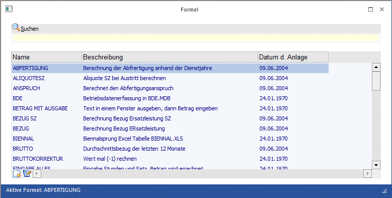

Die Formel ist die Basis für die Erfassung von Lohnarten in der Einzel- und in der Stapelabrechnung bzw. in der Rollung.
Die Formel ermöglicht es, die Be- und Abzüge (Lohnarten) individuell zu gestalten. Mit Hilfe der Formel wird gesteuert
ü welche Eingabefelder bei der Abrechnung zur Verfügung stehen
ü wie die Eingaben verarbeitet werden
ü wo die Eingaben bzw. sich daraus ergebende Werte gespeichert werden
ü welche Eingaben aus vorhandenen Werten und Durchschnitten automatisch angezogen werden sollen
Formeln werden zentral für alle Mandanten angelegt - eine einmal angelegte Formel steht in allen Mandanten zur Verfügung.
Formeln werden in der VB-Script-Sprache erfasst. Der Nachfolgende Abschnitt soll einen Überblick über die vorhandenen Funktionen geben: Welche Variablen können mit welchen Befehlen abgerufen werden.
Formeln können im Menüpunkt
1 Stammdaten
1 Lohnarten
1 Formelstamm
oder
1 Schnellaufruf STRG + F
bearbeitet werden.

Nach Aufruf des Fensters werden in der Tabelle alle bereits angelegten Formeln mit dem Formelnamen, der Bezeichnung und dem Anlagedatum angezeigt. Grundsätzlich ist in der Standardauslieferung eine Sammlung von Formeln enthalten, die die wichtigsten und häufigsten Möglichkeiten der Erfassung von Lohnarten abdecken.
Buttons
Ø Ende
Durch Anklicken des ENDE-Buttons bzw. durch Drücken der ESC-Taste wird das Fenster geschlossen.
Achtung:
Die Formeln sind Daten, die systemglobal gespeichert werden. D.h., wenn eine Formel einmal angelegt wurde, dann ist diese Formel in allen Mandanten verfügbar, die aufgerufen werden können. Daher können die Formeln bei einer "normalen" Datensicherung auch nicht berücksichtigt werden. Aus diesem Grund gibt es die Möglichkeit, Formeln zu exportieren bzw. auch zu importieren.
Ø Löschen
Wenn der Löschen-Button angeklickt wird, wird folgende Meldung angezeigt:
Wenn Sie nur die aktive Formel (Formelname) löschen möchten, dann drücken Sie bitte "Aktive Formel". Wenn Sie alle Formeln löschen möchten, die in der Tabelle geladen sind, dann drücken Sie bitte "Alle Formeln".
Wenn der Button "Aktive Formel" angeklickt wird, dann wir nur die gerade ausgewählte Formel (welche Formel gerade aktiv ist, wird im ersten Teil des Fensters angezeigt) gelöscht.
Wenn der Button "Alle Formeln" angeklickt wird, dann werden alle Formeln, die in der Tabelle angezeigt werden (kann durch einen Suchbegriff eingeschränkt werden) gelöscht.
Durch Anklicken des Abbruch-Buttons wird kein Datensatz gelöscht.
Ø Importieren
Durch Anklicken des Importieren-Buttons kann eine Formel in das System eingelesen werden. Voraussetzung dafür ist, dass die Formel zuvor auch aus einer WinLine exportiert wurde. Diese Formel muss daher die Dateierweiterung MMR haben.
Durch Anklicken des Importieren-Buttons wird der Standard-Öffnen-Dialog geöffnet, mit dem nach allen vorhandenen MMR-Dateien (CWL Macro Files) gesucht werden kann.
Durch einen Doppelklick auf die gewünschte Formel wird diese in das Formelfenster übernommen.
Mit dieser Variante kann immer nur eine Formel nach der anderen importiert werden.
Es gibt auch eine weitere Variante, mit der mehrere Formeln auf einmal importiert werden können:
Das Formelfenster muss geöffnet sein. Dazu wird der Windows-Explorer so geöffnet, dass im Hintergrund immer noch das Formelfenster mit der Tabelle sichtbar ist.
Im Explorer müssen alle Formeln (MMR-Dateien) markiert werden, die importiert werden sollen. Dann klickt man eine der Formel-Dateien an (es müssen immer noch alle Dateien markiert sein), lässt die Maustaste gedrückt und zieht alle Dateien über das Formelfenster. Zu diesem Zeitpunkt ändert sich der Mauszeiger auf einen Mauszeiger mit ein + Symbol. Wenn das der Fall, kann die Maustaste ausgelassen werden - die Formeln werden in das Formelfenster übernommen. Alle Einträge erhalten als Text den Eintrag "Imported from File".
Sollte die Formel bereits existieren, wird die Meldung "Das Macro existiert bereits, wollen sie es mit dem importierten überschreiben?". Wenn die Meldung mit JA bestätigt wird, wird die bestehende Formel überschrieben, wenn die Meldung mit NEIN bestätigt wird, dann wird die Formel nicht exportiert, und es wird die Meldung "Es konnten nicht alle Macros importiert werden" ausgegeben.
Ø Exportieren
Analog zum Import können Formeln auch exportiert werden. Dies kann zum Zweck von Sicherungen oder zum Datentransfer verwendet werden. Beim Export gibt es ebenfalls zwei Möglichkeiten:
Export einer einzelnen Formel
Zuerst muss aus der Tabelle die Formel gewählt werden, die exportiert werden soll. Dann muss der Button Exportieren angeklickt werden. Nun erhalten Sie die Abfrage
Wenn Sie nur die aktive Formel (Formelname) exportieren möchten, dann drücken Sie bitte 'Aktive Formel'. Wenn Sie alle Formeln exportieren möchten, die in der Tabelle geladen sind, dann drücken Sie bitte 'Alle Formeln'.
Diese Meldung muss durch Anklicken des Buttons "Aktive Formel" bestätigt werden. Dadurch wird nur die in der Meldung angeführte Formel exportiert.
Im nächsten Schritt wird ein Fenster geöffnet, in dem das Verzeichnis ausgewählt werden kann, in das die Formel exportiert werden soll. Zusätzlich dazu kann im Feld
Ø Dateiname
der Name gewählt werden, unter dem die Formel abgespeichert werden soll. Auf alle Fälle sollte die Dateierweiterung MMR beibehalten werden.
Durch Anklicken des "Speichern" Buttons wird die Formel in das gewählte Verzeichnis erstellt. Diese Datei kann mit einem Texteditor angesehen werden, sollte aber auf keinem Fall verändert werden.
Export mehrerer Formeln
Im ersten Schritt muss eine Einschränkung der Formeln getroffen werden. Diese Einschränkung kann über das Feld
Ø Suche
vorgenommen werden, wobei innerhalb der Formelnamen immer im Volltextmodus gesucht wird (der Suchbegriff wird innerhalb des ganzen Formelnamen gesucht).
Wenn alle gewünschten Formeln in der Tabelle angezeigt werden, kann der Exportieren-Button angeklickt werden. Dadurch wird folgende Meldung angezeigt:
Wenn Sie nur die aktive Formel (Formelname) exportieren möchten, dann drücken Sie bitte 'Aktive Formel'. Wenn Sie alle Formeln exportieren möchten, die in der Tabelle geladen sind, dann drücken Sie bitte 'Alle Formeln'.
Diese Meldung muss durch Anklicken des Buttons "Alle Formeln" bestätigt werden.
Im nächsten Schritt wird ein Fenster geöffnet, in dem das Verzeichnis ausgewählt werden kann, in das die Formeln exportiert werden sollen.
Durch Anklicken des OK-Buttons werden die Formeln in das gewählte Verzeichnis erstellt, wobei für jede Formel eine Datei "Formelname.MMR" erstellt wird. Diese Dateien können zwar mit einem Texteditor angesehen werden, dürfen aber nicht verändert werden. Enthält der Name der zu exportierenden Formel Sonderzeichen (wie z.B. "/<>|*") so werden diese durch das Zeichen "_" ersetzt.
Ø Formel mit Fenster erstellen
Normalerweise wird eine Formel ohne Fenster erstellt, d.h. die zur Verfügung stehende Eingabemaske ist von der WinLine vorgegeben. Wird dieser Button aktiviert und danach eine neue Formel angelegt, so kann das Formelfenster (die Eingaben) selbst gestaltet werden. Damit können z.B. auch Datenzugriffe auf Zeiterfassungsprogramme oder Ähnliches erstellt werden. Nähere Informationen diesbezüglich erhalten Sie bei Ihrem MESONIC-Fachhändler.
Hinweis:
Diese Funktion steht nur im CWL LOHN zur Verfügung!
Ø Liste
Durch Anklicken des Liste-Buttons kann eine Liste der Formeln ausgegeben werden, wobei durch Anklicken des "Protokollausgabe-Buttons" entschieden werden kann, ob die Liste am Bildschirm oder am Drucker ausgegeben werden soll. Nachdem der Button angeklickt wurde, erfolgt die Abfrage, ob nur die aktive Formel oder alle Formeln (die in der Tabelle aufgelistet sind) ausgegeben werden sollen.
Ø Protokollausgabe auf
Ø NEU
Durch Anklicken des NEU-Buttons können neue Formeln erstellt werden, wobei die Basisfunktion der Formel bereits eingefügt wird. In der Tabelle wird eine neue Zeile eröffnet, in die der Name und die Bezeichnung der Formel hinterlegt werden kann.
Diese Formel wird standardmäßig so erstellt, dass 2 Eingabefelder (Satz und Stunden) gefüllt werden müssen und daraus wir der Betrag gerechnet, der dann nochmals editiert werden kann.
Ø Editieren-Button
Wenn eine Formel bearbeitet werden soll, so muss die gewünschte Formel in der Tabelle ausgewählt und danach der Editieren-Button angeklickt werden bzw. muss die Tastenkombination ALT+E gedrückt werden.